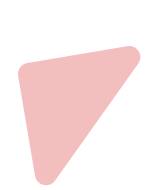

Desenvolvedor
Web Full-stack.
Tecnologia, Física, Engenharia e Códigos. É isso que me move.

"Descobri na tecnologia minha paixão e tive a sorte de transformá-la em minha vocação."
Entre em contato
Sou um entusiasta da tecnologia aficionado pelo universo da ciência e da matemática,
busco acompanhar as principais tendências sobre inovações tecnológicas e exploração espacial.
Atualmente, estou cursando Engenharia da Computação pelo Centro Universitário Una
e busco expandir meus conhecimentos em desenvolvimento de software, programação e machine
learning.
Minha experiência como profissional de T.I inclui suporte técnico em hardware, software e redes.
Estou constantemente ampliando minhas habilidades por meio de cursos, bootcamps e seminários de
tecnologia,
mantendo-me atualizado sobre tendências emergentes como inteligência artificial e cultura
organizacional.
Comprometido com o avanço contínuo da sociedade, reconheço a importância de fortalecer minhas
habilidades interpessoais,
comunicativas e emocionais para alcançar o sucesso profissional.

 HTML5
HTML5
 CSS3
CSS3
 NODE
NODE
 Flask
Flask
 Django
Django

Desenvolvi uma landing page utilizando HTML, CSS, JS e Bootstrap simulando uma página de vendas para uma cafeteria. A página tem um design atraente e informativo, destacando algumas funcionalidades do framework como, modais, cards, breakpoints e modo noturno. Design feito utilizando Figma na plataforma da Alura.